Chelsea FC Fan Site
An unofficial, fan-made scrollytelling portrait of the Chelsea FC 2026/27 first team.
 About me
Projects
View my projects
Contact
Get in touch
About me
Projects
View my projects
Contact
Get in touch
Resume · Experience
Wayfair (via Extern) · Remote
July–August 2026
Resume · Experience
The Suwandi Foundation · Bali, Indonesia
May–July 2025
Resume · Experience
As Student Manager, my goal wasn’t to gain followers or boost views. It was to build engagement among CMC students, faculty, and alumni by showcasing the work our students created at the Gould Center for Humanistic Studies. I did this by putting the faces of CMC students and faculty front and center, and by extending that engagement through Reels.
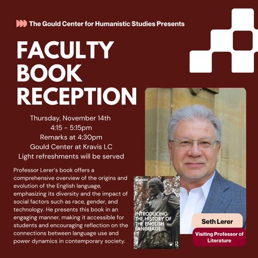
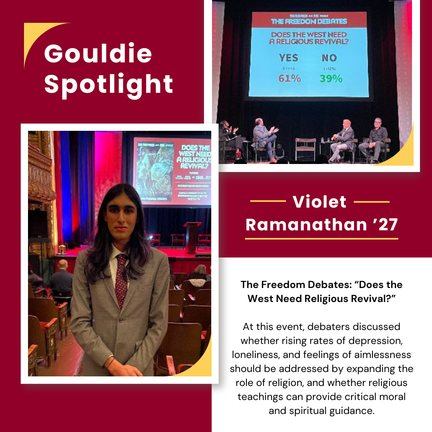
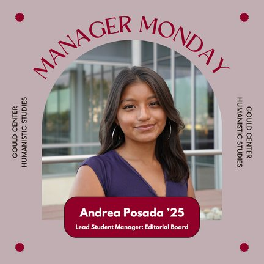
Instagram grew 30% and LinkedIn 47%.
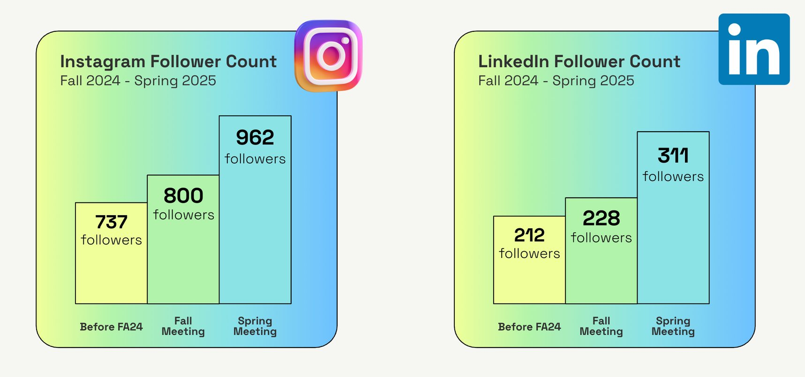
Gould Center Fellow posts averaged 30 likes; my first one drew 71 likes and 19 comments.
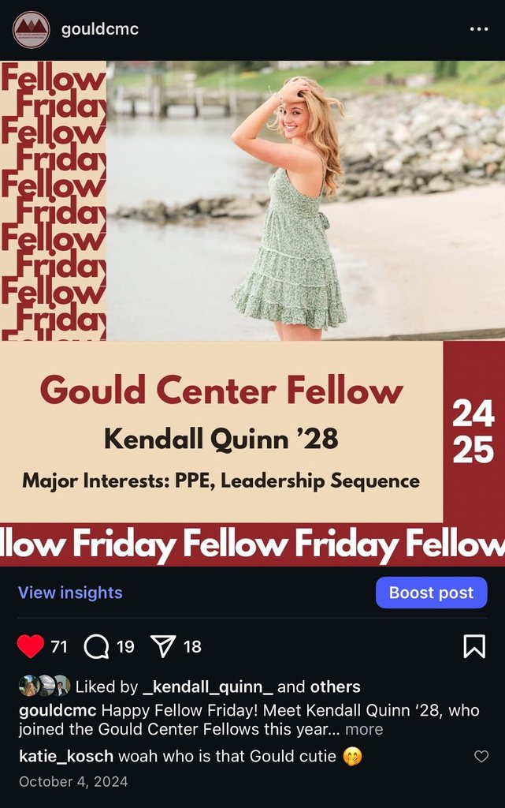
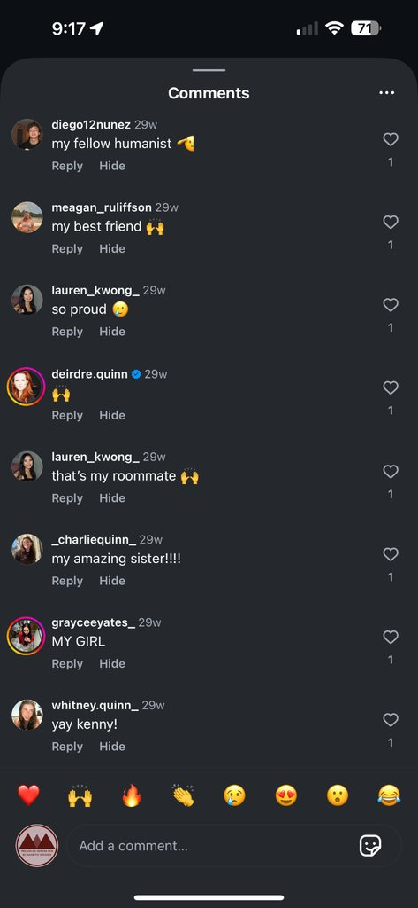
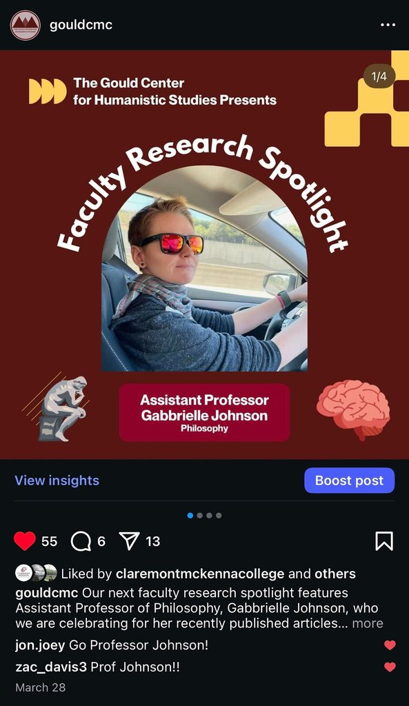
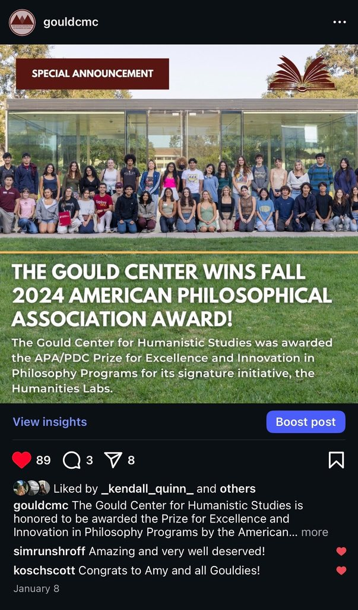
These posts averaged 2,400 views.
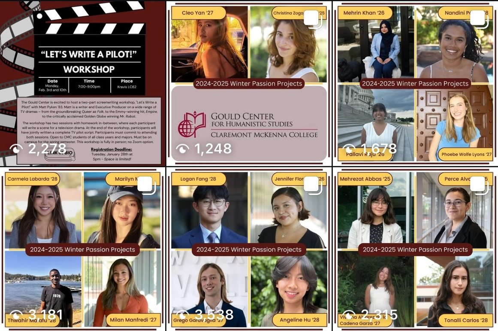
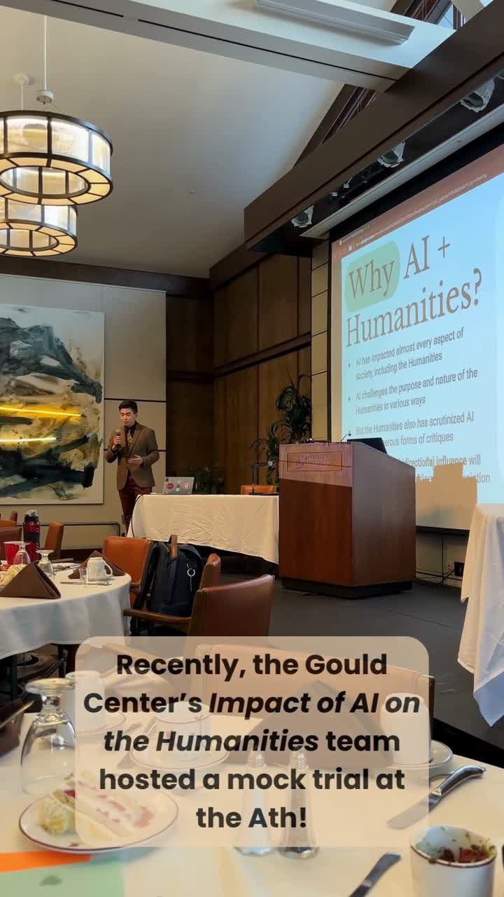
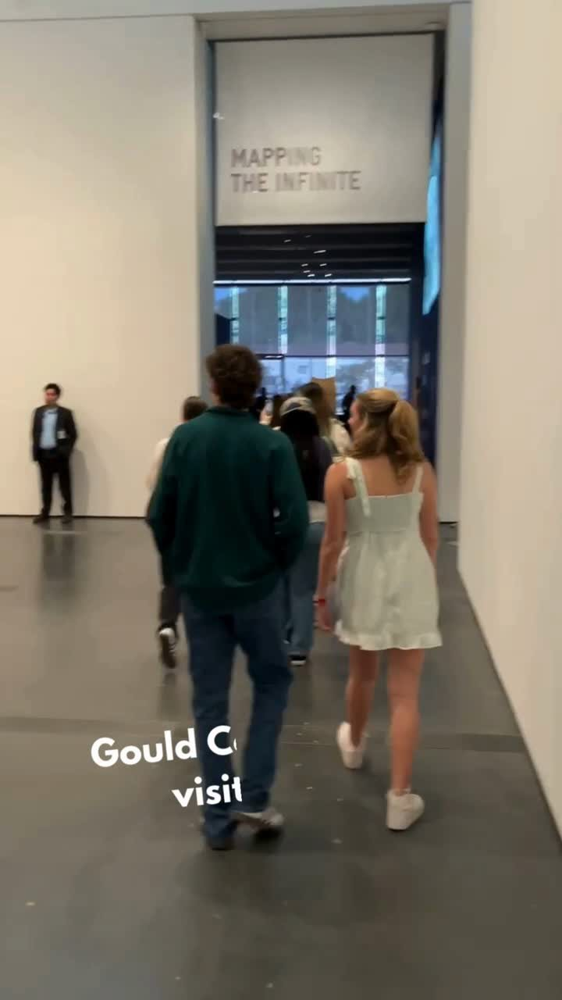
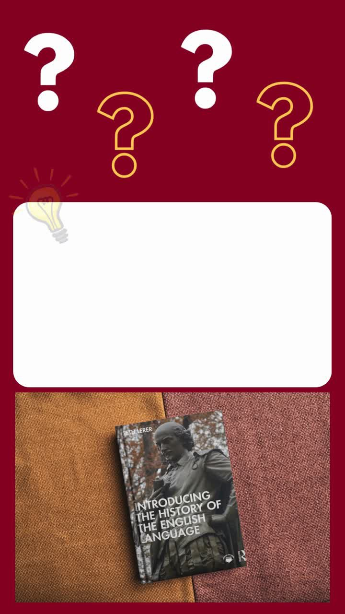
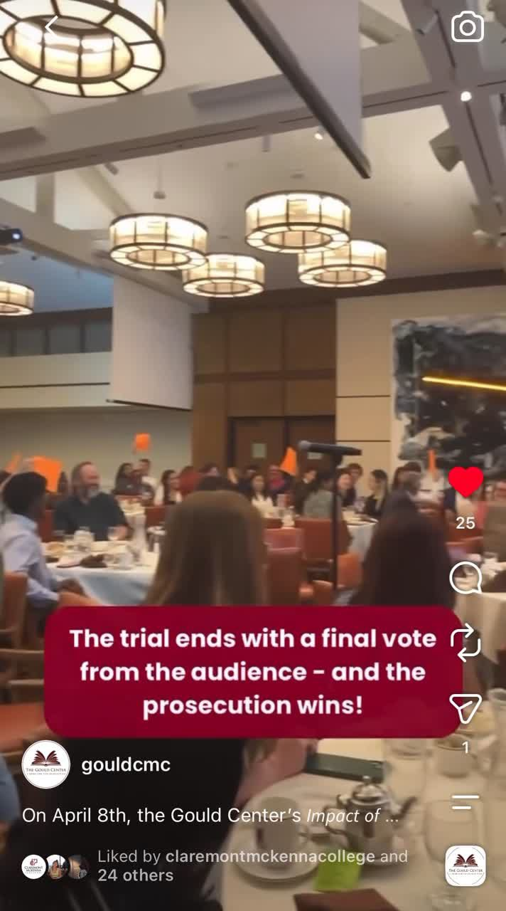
Projects
Code, sites, and AI agents I’ve built.
An unofficial, fan-made scrollytelling portrait of the Chelsea FC 2026/27 first team.
A website for a fictional pizza shop, with a menu and ordering flow. My first site built with Claude.
Projects